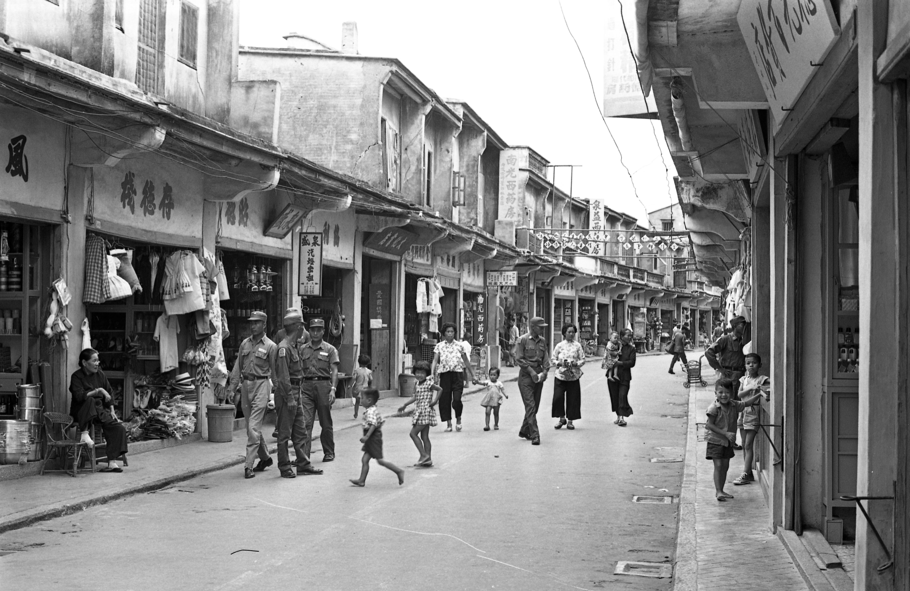

這次大選開票新聞，除了看著開票數字跳動外，各家媒體紛紛祭出「選戰章魚哥」報導，想在開票結束前，推測總統大選結果。
但天玉里、建德里這些大家耳熟能詳章魚哥，真的神準嗎？
且讓我們用中選會的選票數據，帶你看「真．章魚哥」是否存在？今年最新出爐的冠軍章魚哥又是誰？
★文末有「你家是不是章魚哥」小測驗，千萬別錯過！
章魚哥TOP 10排行榜出爐
2008 / 2012 / 2016
一開始，我們試著找出像天玉里這樣「村里等級」的章魚哥，但大部分村里包含的人數太少，每一票都能大幅左右候選人的得票率、變動性太高。
跑完資料後發現，沒有任何一個村里在2008、2012兩屆大選，都入榜TOP 10排行，誰能成為選戰章魚哥，看來純屬巧合。
因此，我們改取尺度較大的「全台368個鄉鎮市區」來比較，看看章魚哥是否存在。
2016年的冠軍章魚哥：彰化田中
2016年最準的章魚哥冠軍，由彰化田中奪得，亞軍是台中新社、季軍則是新北八里。
彰化田中是2012年的第5名，今年大躍進來到第一，新北八里則從2012年的第4名前進到第3名。
2008年的章魚哥冠軍台中霧峰，在2012年和這次大選都跌出榜外，今年排到第84名；2012年的冠軍雲林斗六，這次仍相對爭氣，排名第5。
2016大選的TOP 10榜單中，北部市鎮和中部市鎮各佔5名，南部、東部及外島地區市鎮皆從缺。
3屆都入榜的－沒有人
檢視入榜次數，相當遺憾地，三屆大選都擠入前10名的市鎮：從缺。
不過3次中有2次入榜的市鎮有5個，分別是新北八里、桃園蘆竹、苗栗通霄、彰化田中、雲林斗六。
然而原是「唯一2008年和2012年都有入榜」、一度被看好的桃園蘆竹，今年卻掉出榜外，排到第13名。
2016總統大選，宋楚瑜得票率大增至12.83%，影響章魚哥準度。圖／報系資料照
宋楚瑜效應：讓2016章魚變沒那麼準？
比較2016總統大選的章魚哥準度，入榜的前10名市鎮，竟沒有2008年、2012年的準。
不若過去兩屆入榜的「章魚前輩們」的投票結果，都只和全國投票結果差零點幾個百分比，這次入榜的章魚哥，有近半可差到一個百分點以上。
背後的原因，竟跟宋神掌有關？
2012年開始宋楚瑜的加入，戰局從藍綠對決變成三足鼎立。
2012年，宋楚瑜僅有2.77%的得票率，因此沒有顯著的影響。
但這次大選，宋楚瑜的得票率卻大增到12.83%，對於準度的影響力明顯增加。
在宋神掌的「逆襲」之下，章魚哥們越來越難準、難存在，彰化田中、新北八里與雲林斗六仍居於章魚哥排行榜中，就別太苛責它們啦！
為何能成為章魚哥？
這些入榜的市鎮為何那麼神？憑什麼成為章魚哥？
影響選舉結果的因素眾多，我們難以直接歸納「這個市鎮因為這樣所以變成章魚哥」的因果關係，但觀察章魚哥榜單，推測其中可能關鍵因素之一，是移入人口眾多。
例如新北的土城、八里，因為北大特區很夯的三峽，桃園的蘆竹，還有不少台中的市鎮，皆是近年移入人口大成長的地區。
來找頭路的
以2008年和2012年都在榜內的桃園蘆竹為例，早期蘆竹是傳統農業封閉型鄉鎮，直到中山高南崁交流道、機場系統大竹交流道陸續通車，打開蘆竹任督二脈，此區工商業開始蓬勃發展，入口也持續成長。
蘆竹市議員劉勝全說，蘆竹工業區及大型工廠多，不少來自雲林、彰化、高雄等中南部民眾，紛紛到蘆竹謀生打拚，落地生根。

桃園蘆竹近年發展快速，成為台北人移入的主要衛星市鎮，外來人口多。圖／報系資料照
被房價嚇到的
近年大台北地區的新移民則是另一影響因素，由於台北房價飆漲，買不起房子而搬家的青年紛搬周遭衛星市鎮。
劉勝全解釋，蘆竹區內人口最多的南崁地區，有一半以上人口來自台北，特質是年輕、教育程度高，自主意識較強，投票行為比較不會受到政黨左右。
加上有來自中南部打拚的移民，以及在地居民、散居各地的眷村二代、客家、原住民族群，組成多元、複雜，該區總統大選的投票，相對具有指標意義。
章魚哥們還有哪些共通點
過去三屆總統大選「章魚群」分布變化圖
除了外來移民多外，這些章魚哥們還有哪些共通點嗎？
以地理位置來看，若從「住海邊」或「住山上」分類，近海的有新北八里、桃園蘆竹、苗栗通霄等5區，靠山區域則有台北北投、台中霧峰與高雄甲仙等10區。
若看南北分布，北部有桃園蘆竹，台北北投和萬華、新北八里、三峽、土城，大溪與苗栗通霄、卓蘭9區；南部則有高雄甲仙。
你可能會注意到，大多數章魚群主要聚集在中部地區：
超過半數（13/24）的章魚哥，位在大安溪以南，濁水溪以北。
台中市更有9個區域入章魚哥之列，山、海、屯以及市區都有章魚哥的蹤影：
山線的后里區、潭子區與新社區、海線的大安區與龍井區，屯區則有大里區，霧峰區與太平區，外加台中市中區。
決戰中台灣 係金ㄟ！
中部章魚哥群聚，映證了藍綠「決戰中台灣」的說法：
中台灣藍綠得票差距非常小，比例消長對選情牽一髮動全身，是大選決戰廝殺之地。
中台灣早期地方派系根深柢固，政黨政治發展後，地方派系壟斷的局面才被打破，如今藍綠勢均力敵，變動幅度大，成為總統大選的指標縣市。
也因為截至目前為止，總統大選勝出者的得票率多為六成左右，使得五五波的中部區域，較容易符合選戰結果。
離章魚很遠的鐵票倉：離島與後山
另一個值得關注的，是不受選舉趨勢影響，每次投票都一面倒的鐵票倉。
不像章魚哥每次選舉都乾坤大挪移，鐵票倉排行榜10名中就有8名三度連莊，這些市鎮位在金門縣、連江縣、屏東縣、花蓮與台東，都是深藍的鐵票倉。
鐵票倉之所以如此死忠，與他們的歷史背景、社會文化有密切的關係。
離島
先從金門縣與連江縣說起。
台灣各縣市1950年開始實施地方自治，但金門縣與連江縣直到1992年金馬地區戰地政務終止之後，才開始實施地方自治，1993年開放縣長民選。
長期以來，這裡不存在「藍綠對決」，取而代之的是宗親之間的競爭，分屬國民黨、親民黨與新黨，都是藍軍勢力。民進黨始終無法湊一咖，更別說是與藍軍抗衡。
長期以來，金門、連江縣都沒有「藍綠對決」的現象。圖／報系資料照
後山
而屏東、台東、花蓮的「鐵票倉」都是原住民部落：
春日鄉、金峰鄉、來義鄉與達仁鄉皆以排灣族為主，卓溪鄉則是布農族。
國民黨長期執政時期提供原住民族許多補助與福利，民進黨很少於原住民選區提名候選人，使得原住民對於國民黨的支持度相當高。
測測看！你住的地方 是總統大選章魚哥嗎？
看完章魚哥排行榜，好奇你的家鄉的「章魚哥程度」，在全台368個鄉鎮市區中，究竟排名第幾嗎？請在下方輸入你住的縣市及行政區看結果。
我們2020年再見！
2008
???
名
2012
???
名
2016
???
名

2008 / 2012 / 2016
章魚哥是怎麼選出來的？
大家中學的時候應該都學過兩點在三度空間的距離算法，我們試著用這個概念，來選出「大選章魚哥」。
如果我們將ABC三組候選人在全國的得票率，化為一個三度空間的座標點（X%，Y%，Z%），而某鄉鎮三個陣營的得票率是另一個座標點（X1%，Y1%，Z1%）。
則這兩點間的距離，即為：
兩點間的距離愈接近，就代表這個鄉鎮的投票結果，愈能代表大選結果。
我們發現，排名前10%的鄉鎮市區，距離都約在2左右，因此我們定義，距離小於等於2的鄉鎮，就是我們的「大選章魚哥」！
聯合報新媒體中心／陳皓嬿、李怡欣、楊棋宇、鄭偉廷、蘇士堯 製作
聯合報／游文寶 報導
插畫 ／董十行
資料來源／中選會
＊打星者為二度入榜的市鎮